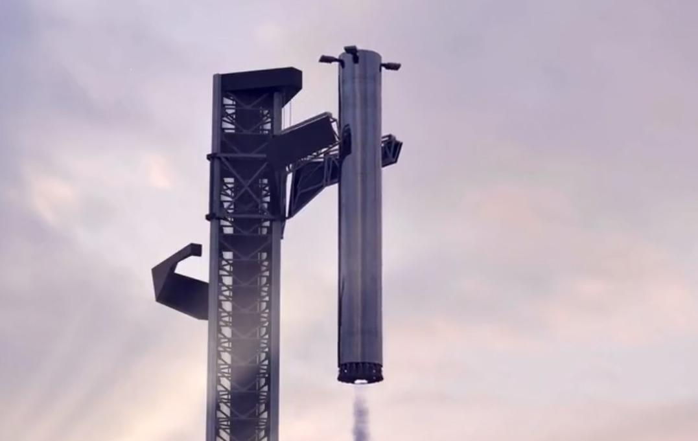

Falcon9 Full Thrust
Falcon 9 Full Thrust is a partially reusable medium-lift launch vehicle, designed and manufactured by SpaceX,Designed in 2014–2015
On April 8, 2016, the Full Thrust version of the Falcon 9 family was the first launch vehicle on an orbital trajectory to successfully vertically-land a first stage. The landing followed a technology development program conducted from 2013 to 2015. Some of the required technology advances, such as landing legs, were pioneered on the Falcon 9 v1.1 version, but that version never landed intact. Starting in 2017, previously-flown first-stage boosters were reused to launch new payloads into orbit. This quickly became routine, in 2018 and in 2019 more than half of all Falcon 9 flights reused a booster. In 2020 the fraction of reused boosters increased to 81%.

Starship
Starship is a fully reusable launch system in development by American aerospace company SpaceX, which consists of a first stage named Super Heavy and a second stage named Starship
Both stages are made from stainless steel and designed to hold liquid oxygen and liquid methane. Before launch, a specialized tower stacks Starship's stages and launch pad to mount the vehicle. During liftoff, Super Heavy's 33 Raptor engines produce 72 MN (16,000,000 lbf) of thrust, twice that of a Saturn V rocket. The Starship spacecraft fires three Vacuum Raptors in space, move two pairs of flaps to control its descent, and fires three Raptors during landing. Starship can send more than 100 metric tons (220,000 lb) to low Earth orbit; higher Earth and other orbits are accessible after being refueled by tanker Starships. Starship variants can also land on the Moon and Mars.

Falcon Heavy
Falcon Heavy is a partially reusable heavy-lift launch vehicle designed and manufactured by SpaceX
It is derived from the Falcon 9 vehicle and consists of a strengthened Falcon 9 first stage as the center core with two additional Falcon 9-like first stages as strap-on boosters.Falcon Heavy has the highest payload capacity of any currently operational launch vehicle, and the third-highest capacity of any rocket ever to reach orbit, trailing the Saturn V and Energia. SpaceX conducted Falcon Heavy's maiden launch on 6 February 2018, at 20:45 UTC. The rocket carried a Tesla Roadster belonging to SpaceX founder Elon Musk, with a dummy dubbed "Starman" in the driver's seat, as a dummy payload. The second Falcon Heavy launch occurred on 11 April 2019 and all three booster rockets successfully returned to Earth. The third Falcon Heavy launch successfully occurred on 25 June 2019.
Projects

Starlink is a satellite internet constellation operated by SpaceX providing satellite Internet access to most of the Earth.
The constellation consists of over 1600 satellites in mid-2021, and will eventually consist of many thousands of mass-produced small satellites in low Earth orbit (LEO), which communicate with designated ground transceivers. While the technical possibility of satellite internet service covers most of the global population, actual service can be delivered only in countries that have licensed SpaceX to provide service within any specific national jurisdiction. As of October 2021, the beta service offering is available in 18 countries.
The SpaceX Dragon, also known as Dragon 1 or Cargo Dragon, was a class of partially reusable cargo spacecraft developed by SpaceX.
During its maiden flight in December 2010, Dragon became the first commercially built and operated spacecraft to be recovered successfully from orbit. On 25 May 2012, a cargo variant of Dragon became the first commercial spacecraft to successfully rendezvous with and attach to the ISS. SpaceX is contracted to deliver cargo to the ISS under NASA's Commercial Resupply Services program, and Dragon began regular cargo flights in October 2012. With the Dragon spacecraft and the Orbital ATK Cygnus, NASA seeks to increase its partnerships with domestic commercial aviation and aeronautics industry.SpaceX developed a second version called SpaceX Dragon 2, which includes the capability to transport people. Flight testing was completed in 2019, after a delay caused by a test pad anomaly in April 2019, which resulted in the loss of a Dragon 2 capsule. The first flight of astronauts on the Dragon 2, on a mission contracted to NASA, occurred in 2020.
The dearMoon project is a lunar tourism mission and art project conceived and financed by Japanese billionaire Yusaku Maezawa.
The passengers will be Maezawa, 8 civilians, and one or two crew members. The project was unveiled in September 2018 and the flight is expected to occur no earlier than 2023. The project objective is to have six to eight passengers travel with Maezawa for free around the Moon on a six-day tour. Maezawa expects that the experience of space tourism will inspire the accompanying passengers in the creation of something new. The art would be exhibited some time after returning to Earth to help promote peace across the world. Maezawa had previously contracted in 2017 with SpaceX for a lunar flyby in a much smaller Dragon 2 spacecraft launched by a Falcon Heavy launch vehicle, which would have carried only two passengers. According to a SpaceX announcement in early 2018, the Falcon Heavy plan was shelved in light of the development of Starship. As of 2021, Starship is in development. The crewed flight will not take place until after Starship is thoroughly tested and after an uncrewed circumlunar test flight.
NEWS
-
SpaceX Aims to Deploy 200,000 Starlink Dishes in India Next Year

SpaceX's Starlink satellite internet service currently has very long wait times, but the company is signaling that a major international expansion is underway in India. Company representatives in the country recently gave a presentation that revealed SpaceX is aiming to ship out 200,000 Starlink dishes to local users by December 2022. Once set up, these dishes will supply rural districts in India with high-speed internet from satellites in orbit. The 200,000 number is noteworthy because currently SpaceX is only serving about 100,000 users. Meanwhile, another 500,000 prospective customers have already signed up to try out the service but are waiting for access.
-
SPACEX FLEXES GIANT STARSHIP-CATCHING “CHOPSTICKS” FOR THE FIRST TIME
The “Mechazilla” tower, as SpaceX CEO Elon Musk likes to call it, is meant to ensure that the space company’s heavy lift rocket called Starship and its accompanying Super Heavy booster make a soft landing. In August, Musk revealed that “SpaceX will try to catch largest ever flying object with robot chopsticks” in a tweet — a truly wild concept that could quickly turn into a disaster unless everything goes perfectly to plan.
BOOKS

SpaceX: Making Commercial Spaceflight a Reality
SpaceX: Making Commercial Spaceflight a Reality
This first account of commercial spaceflight’s most successful venture describes the extraordinary feats of engineering and human achievement that have placed SpaceX at the forefront of the launch industry and made it the most likely candidate for transporting humans to Mars. Since its inception in 2002, SpaceX has sought to change the space launch paradigm by developing a family of launch vehicles that will ultimately reduce the cost and increase the reliability of space access tenfold. Coupled with the newly emerging market for governmental, private, and commercial space transport, this new model will re-ignite humanity's efforts to explore and develop space. BEST BUY LINK